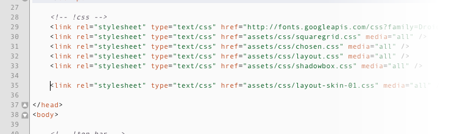
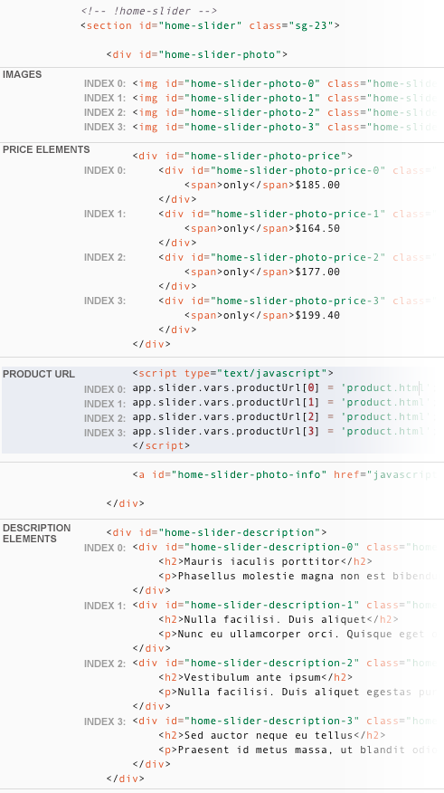
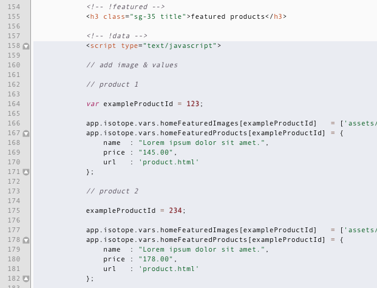
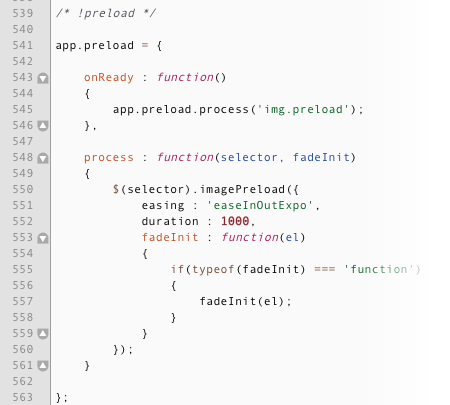

01.02.2012
This theme was designed by Luca Bertaiola for Mountain Themes
Akaishi theme has a fixed layout built with a 35 columns grid. every element is wrapped up in a container div (#container). The only element that is outside the container div is the top bar (#top-bar) which contains the user login and the checkout button. You can easily find this elements inside the layout file.
Every section of the layout is prefixed with an html comment just like this one: <!-- !header -->. The main sections are:
There a lot of other sections which are relative to pages. They are wrapped between the <!-- !PAGE-CONTENT --> and <!-- !PAGE-CONTENT-END --> html comment tags.
Akaishi theme is built with squaregrid grid system (thesquaregrid.com), this css framework generates a grid with 35 columns. Every box of the layout generate a space of 1 column and a variable width of columns, this value is defined inside the class of the 'box' element of the framework and it has the 'sg-' prefix. Every section of the layout has this class value and you can try to modify it in order to alter the width of the elements.
For example the slider inside the the home page (section#home-slider) has the 'sg-23' class. If you modify the 23 value in 24 you add a column of width to the slider element, obviously this practice could broken the layout. Remember: if you add one or more columns of width you must reduce another element in the same row by the same value because the total of the elements plus spaces must be 35.
Akaishi theme comes with 5 css files:
css-chosen.css
This file define the styles for the jquery plugin 'chosen' which enhance the user experience of select elements.
css-fonts.css
Imports from google the webfonts 'Chivo' e 'Droid Serif'
css-layout.css
This is the main css file, it defines the layout, the tyopgraphy and every other things related to the akaishi design.
css-shadowbox.css
Defines the styles for the Lightbox plugin called 'Shadowbox'
css-squaregrid.css
This is the file for the squaregrid framework. It defines the main classes of the grid.
css-layout-skin-01.css
The dark skin of Akaishi. (optional)
Let's have a deep look into the main css file of the theme. This file is structured in sections. Every section has a top comment just like this example : /* top-bar */
At the top of the file there are the reset rule (the one with the * selector), the base rules of the body element and html tags, in fact you should fin easily the secions 'anchors', 'paragraphs', 'headings' and 'tags', these are the basic styles for the html tags.
After the 'tags' section there are some 'general purpose' classes used in many pages of the theme, then the 'isotope' section which defines some css3 rules for the isotope jquery plugin used in the home page of the featured products box.
After the isotope section there are sections for every box of the layout, they are:
Akaishi Theme comes with 2 skins White and Dark. The only thing you must do in order to enable the dark skin is to add the link to the css-layout-skin-01.css file.
Remember just one thing. Add the reference link tag after the others links, specially after 'layout.css' link tag.
In order to add and remove sections to the home slider ('home-slider' section in the index.html file) you need to add (or remove):
Note that every element has an index number which is a reference to the product display (this is not a product id, it's a simple incremental index used by the slider script).
If you want to add an element just add every element with the correct incremental index. If you want to remove an element be sure to not interrupt the incremental scale of indexes.
Add your products to the featured products grid in home page is very easy, believe me.
Open index.html and find the 'featured' section. Just after the title (the h3 tag) there's a script tag with all the featured products data. Just edit this list of javascript array and objects and you're done.
Let's see in detail the code:
Repeat this process for every product you want to add inside the featured products grid.
Akaishi theme comes with 7 javascript files, not all of them are present in every page:
js-akaishi.js
the main javascript file of the theme.
js-app.js
a custom miniframework i've developed.
js-chosen.jquery.min.js
the js file for the chosen jquery plugin.
js-jquery.1.7.min.js
jquery framework, version 1.7
js-jquery.isotope.min.js
isotope plugin for jquery.
js-shadovbox.js
shadowbox plugin.
js-jquery.plugins.js
a collection of plugins for jquery.
This is the main Javascript file of the theme. This is the only js file you should modify if you want to modify something about the functionalities of the theme.
Just like the main css file js-akaishi.js is structured in sections that starts with a js comment. The sections of the files are:
select element.Others sections manage some minor functions of the theme.
In the above example you can find a javascript section which starts with a javascript comment (/* !preload */ in this example) and end with the final brace of app.preload object.
There are 3 psd files included with the package: The home page, the collection and the product page.
Akaishi theme uses the Disqus comment system for the articles of the blog and you need a (free) account for this plattform to provide a working comment system for your blogs. Let see how to register and activate the comments in your blog.
go to disqus.com and click on the 'signup' button.
Then complete and submit the form (take note of your 'site shortname' value because you have to set it later in the theme panel), in the next section customize your account and then click on 'continue'.
Open article.html, go to line 96 and modifiy the javascript variable 'disqus_shortname' with the value of your 'site shortname' previously noted. Note that disquss comment system doesn't work on your local host.